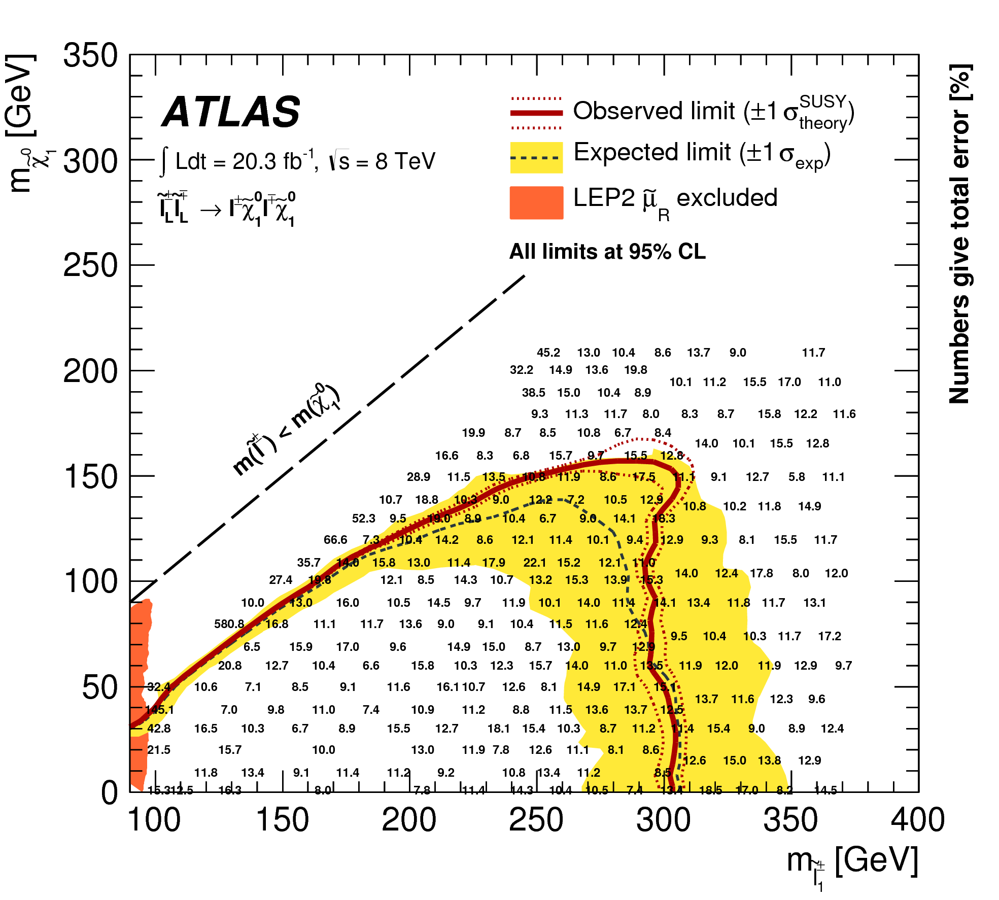

Analyses Names¶
Experimental analyses containing cross-section upper limits (see UL analysis) are labelled according to their publication reference. For ATLAS analyses, we use arXiv or confnote number, for CMS analyses the PAS (public analysis summary) number. However, as discussed in UL analysis, a single publication may contain several analyses, corresponding to different constraints (or sums of elements). Therefore the analysis label must also specify to which constraint it refers too. Although the constraint can be specified using the bracket notation, this is usually too cumbersome for a simple label. We therefore adopt a notation based on the CMS SMS conventions, where each specific constraint is labeled as T<constraint name>. The complete analysis name is then given by:
<publication label>:T<constraint name>
As an example, consider the analysis with the upper limits for slepton pair production:
The conference note corresponding to the analysis is ATLAS-SUSY-2013-11 and its constraint (\([[[e^+]],[[e^-]]] + [[[\mu^+]],[[\mu^-]]]\)) label is TSlepSlep. As a result, SModelS uses the analysis name:
ATLAS-SUSY-2013-11:TSlepSlep
A complete list of all constraint labels (or Tx names) can be found here.

{kind=link}